ԲՆՈՒԹԱԳԻՐ
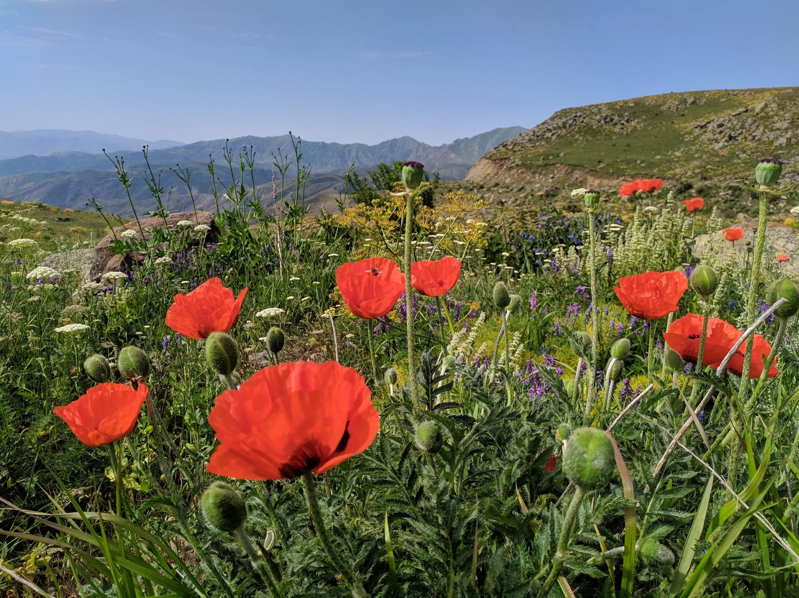
ՏՎՅԱԼՆԵՐ
Ուղղություն
Հյուսիս-արևելքից
Արևմուտքից
Հյուսիս-արևմուտքից
Հարավ-արևելքից
Արևելքից
Սահմանակից մարզեր
Գեղարքունիք
–
Արարատ
Սյունիք
–
Հարևան երկրներ
-
Նախիջևանի ԻՀ
Նախիջևանի ԻՀ
-
Ադրբեջան
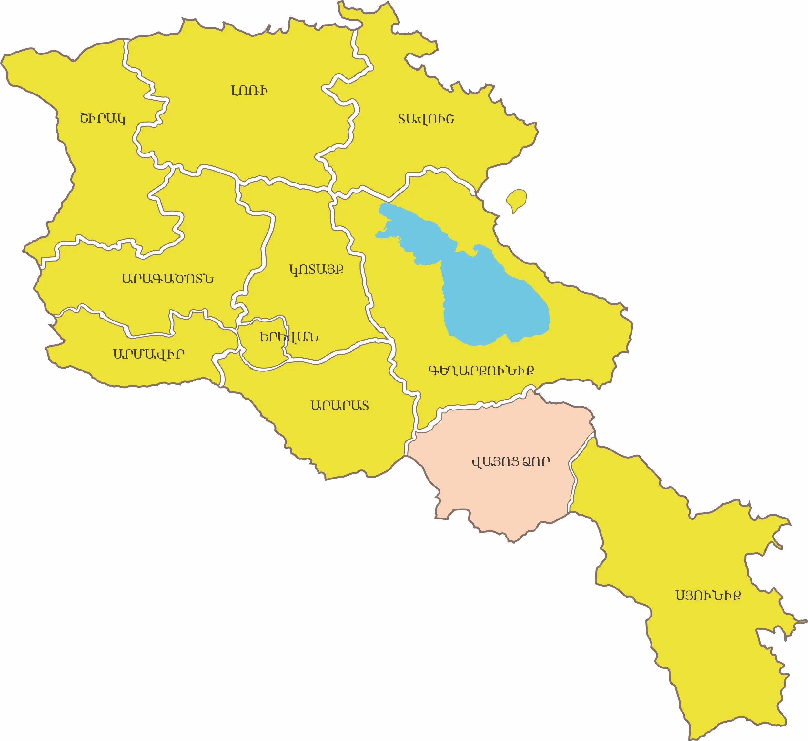
Հիմնադրումը
ՀՀ Վայոց ձորի մարզը կազմավորվել է 1995 թվականի. ապրիլի 12-ին:
Տարածքը
Վայոց ձորի մարզը զբաղեցնում է Հայաստանի ամբողջ տարածքի 7, 8%-ը ( 2,308 կմ²): Մարզի ձգվածությունը կազմում է մոտ 94 կմ ՝ հյուսիսից հարավ և 50 կմ՝ արևելքից արևմուտք։
Վարչական կենտրոնը
Եղեգնաձոր քաղաք: Գտնվում է Արփա գետի ձախ ափերին, Երևանից 120 կմ հարավ-արևելք։ Հնագույն բնակավայր, բնակեցված է եղել մ.թ.ա.1 հազ.-ից:
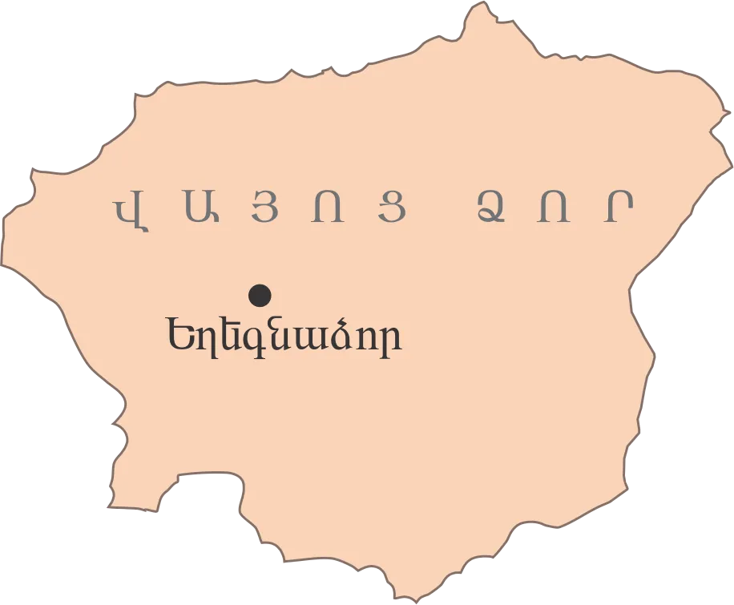
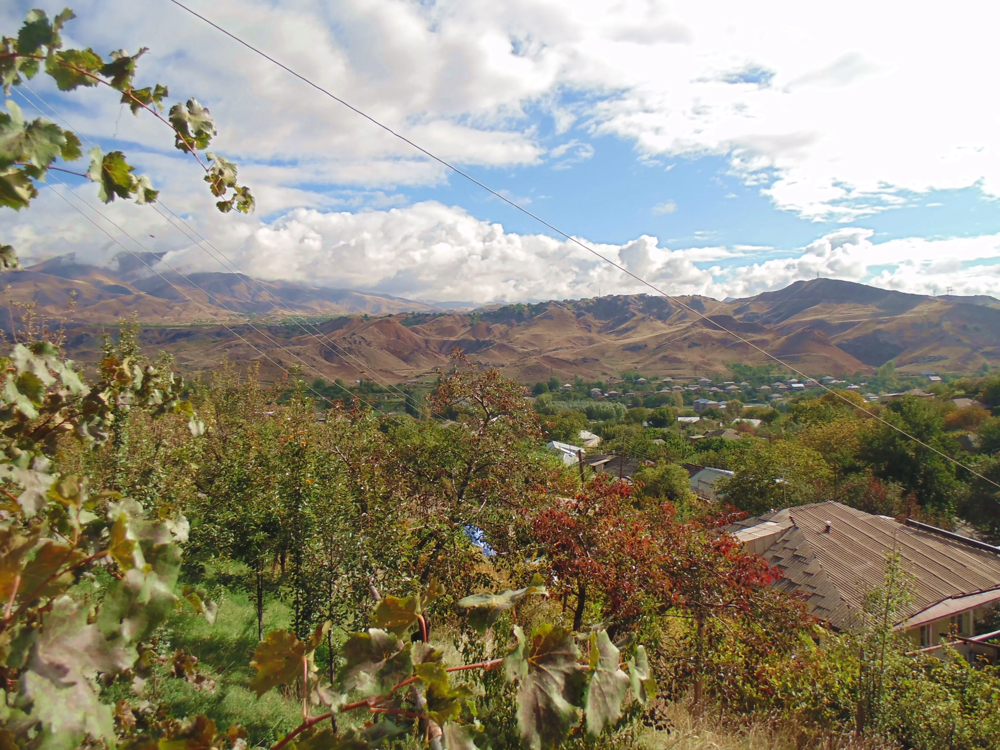
Ցուցիչ
Տարածք
Կոորդինատներ
Բարձրություն
Ամենաբարձր գագաթ
Վարչական կենտրոն
Համայնքներ
Քաղաքներ
Բնակչություն
Հեռավորություն Երևանից
Փոստային կոդ
Թեժ գիծ
Վեբ կայք
Տվյալ
2,308 քառ. կմ (7.8%)
39.7642° N, 45.3338° E
850 – 3,260 մ
Վարդենիս լեռ (3,522 մ)
Եղեգնաձոր
Եղեգնաձոր, Վայք
Եղեգնաձոր, Ջերմուկ, Վայք
60,156 (2017)
93.2 կմ
3601 – 3810
+374 281 2 25 57, +374 281 2 42 68
vdzor.mtad.am
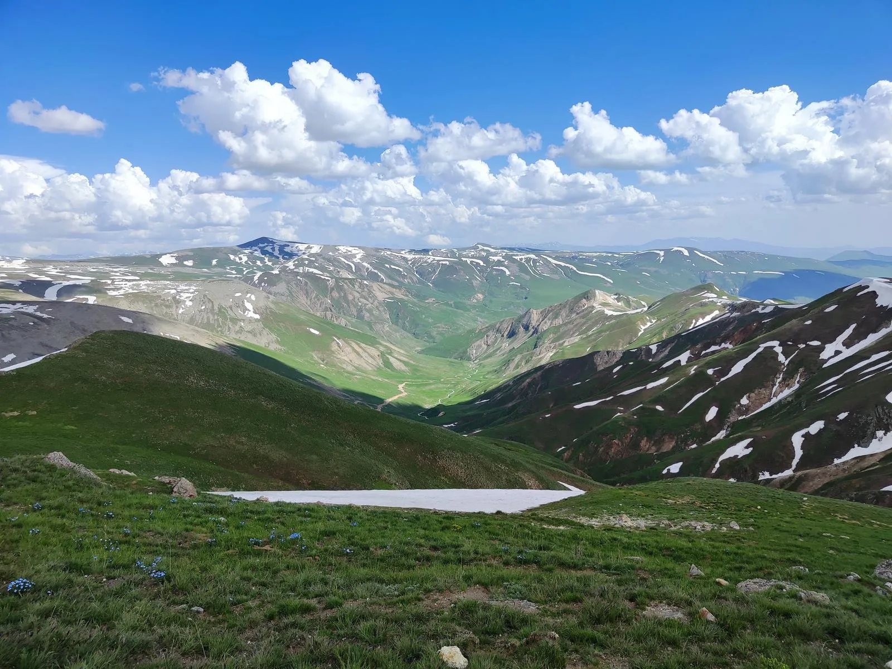
Ամենաբարձր գագաթ - Վարդենիս լեռ (3,522 մ)
Մարզային հեռախոսային կոդեր
Բնակավայր
Եղեգնաձոր
Եղեգնաձոր (CDMA)
Վայք
Ջերմուկ
Գնդեվազ
Մալիշկա
Շատին
Կոդ
281
287 / 95
282
287 / 94
287
281
281 / 99
Մարզպետարան/Կապ
Հասցե․ ք. Եղեգնաձոր, Շահումյան 5
Վեբ կայք vdzor.mtad.am
Էլ․ հասցե․ marzpet.vayotsdzor@mta.gov.am
Հեռ./ֆաքս (+374 281) 22522
-
-
-
ԻՆՉՊԵՍ ՀԱՍՆԵԼ

Ավտոմայրուղիներ
- Վայոց ձորի մարզի կենտրոնով անցնում է Երևան – Արտաշատ – Եղեգնաձոր – Վայք – Մեղրի – Իրան միջպետական ավտոճանապարհը (M-2 ավտոմայրուղի), որը Հայաստանի հյուսիսը կապում է հարավի հետ։
Վայոց ձորը հարևան մարզերի հետ կապող ճանապարհներն անցնում են բարձրադիր, դժվարամատչելի և ոլորապտույտ լեռնանցքներով։
- Գեղարքունիքի հետ՝ Սելիմի լեռնանցքով
- Արարատյան դաշտի հետ՝ Զովաշենի լեռնանցքով
- Սյունիքի հետ՝ Որոտանի լեռնանցքով
Մարզի բնակավայրերը միմյանց հետ կապող ճանապարհները հիմնականում բարեկարգ են։
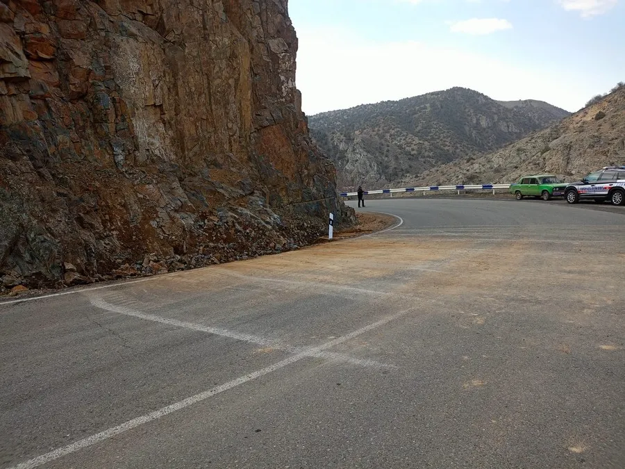
Հեռավորություններ և տրանսպորտ
- Երևան – Եղեգնաձոր 1 ժ 45 ր – 84 կմ Երթուղային տաքսի (մեկնում է Կենտրոնական երկաթուղային կայարանից)
- Երևան – Արենի 1 ժ 56 ր – 108 կմ (67 մղոն) Տաքսի՝ 16,200 դրամ
- Երևան – Վայք 2 ժ 22 ր – 136 կմ (84 մղոն) Տաքսի՝ 20,400 դրամ
- Գործում են նաև մասնավոր ուղևորափոխադրողներ Կոնտակտներ՝ 094 514 103։ 094 408 929
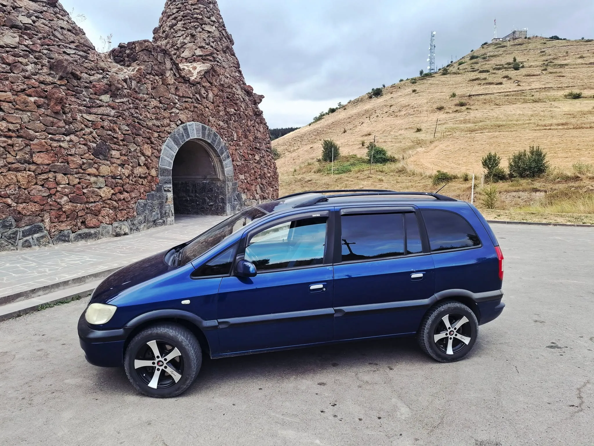
ԿԼԻՄԱ
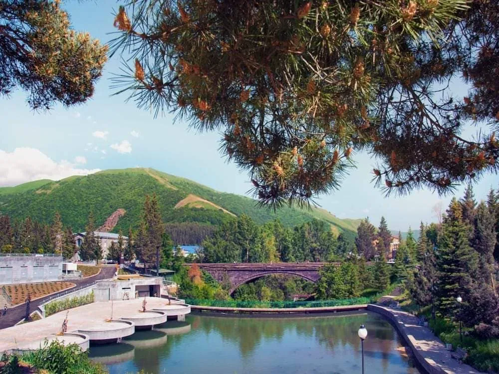
Վայոց ձորի կլիման պայմանավորված է վերընթաց գոտիականությամբ, ըստ բարձրության՝՝ ցածրադիր կիսաանապատների տաք և չոր ցամաքայինից մինչև ձյունամերձ լեռնային գոտի և ալպյան մարգագետիններ։ Կլիման ձևավորվորող կարևոր գործոն է բարձրության մեծ տատանումներով ռելիեֆը (920 մ – 3,520 մ)։ Բնորոշ են ցուրտ կամ չափավոր ցուրտ ձմեռները և շոգ կամ տաք ամառները։ Հիմնական բնական լանդշաֆտներն են՝
կիսաանապատներ
տափաստաններ
Կլիմայի առանձնահատկություններ
- Ցածրադիր և հարթավայրային գոտիներում՝ մեղմ ձմեռ, շոգ ու արևոտ ամառ, միջին ջերմաստիճանը ամռանը +24…+26 °C
- Միջին բարձրության լեռնային գոտիներում՝ երկար ձմեռ, զով ամառ, միջին ջերմաստիճան +13…+16°C
- Բարձրադիր ու լեռնային շրջաններում՝ խիստ ձմեռ, զով ամառ, հունվարին միջին –3…–9 °C, միջին -10…-13°C հուլիսին +15…+20 °C,
- Ձմռանը ձնածածկույթը նախալեռներում 10–76 սմ, բարձր լեռներում մինչև 2 մ
- Ամռանը հովիտներում Գեղամա լեռներից փչող քամիները մեղմացնում են տապը
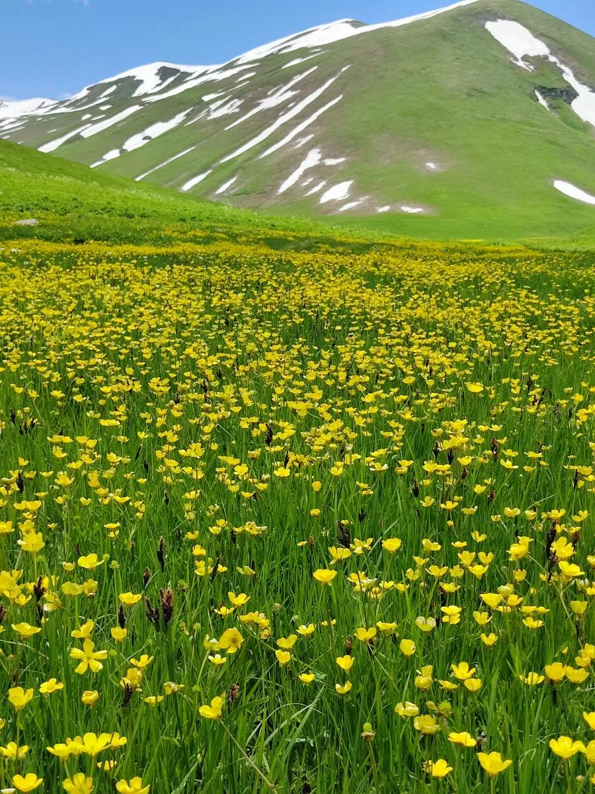
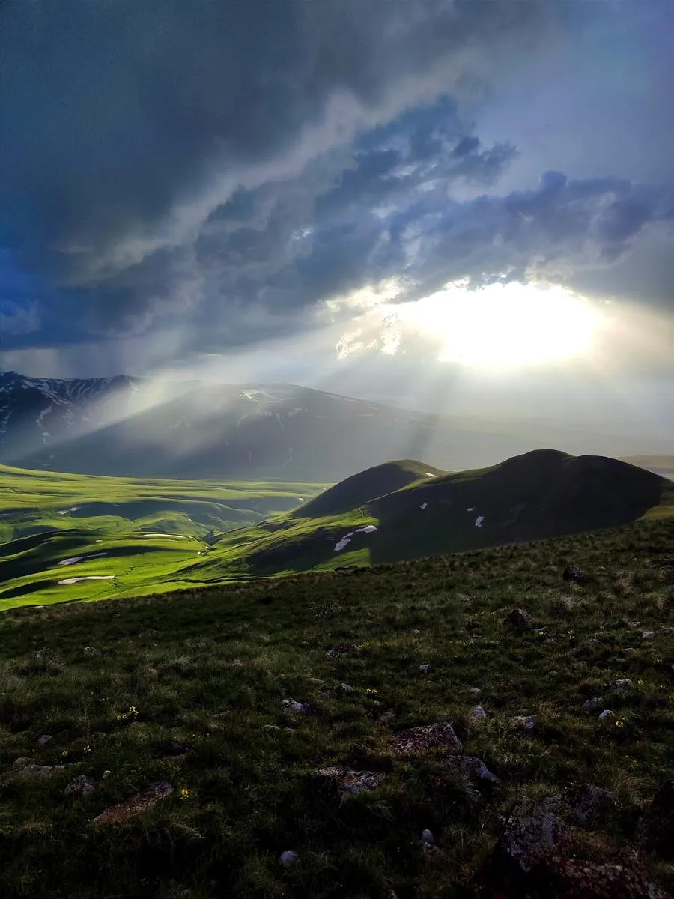
Եղանակների բնութագիր
Ձմեռ - երկարատև, ցրտաշունչ, հաճախ քամոտ, կայուն ձնածածկույթ 50-70սմ բարձրությամբ՝ տևում է 4 ամիս (50–180 օր), հնարավոր են բուքեր
Գարուն – կարճատև, խոնավ, տեղումնառատ, հաճախ ամպրոպներով ու կարկուտով
Ամառ - չոր, զով ու արևոտ (+13…+26°C), հազվադեպ շոգ օրերով
Աշուն – սկզբում մեղմ ու արևոտ, ապա անձրևոտ, սառնաշունչ և մառախուղներով
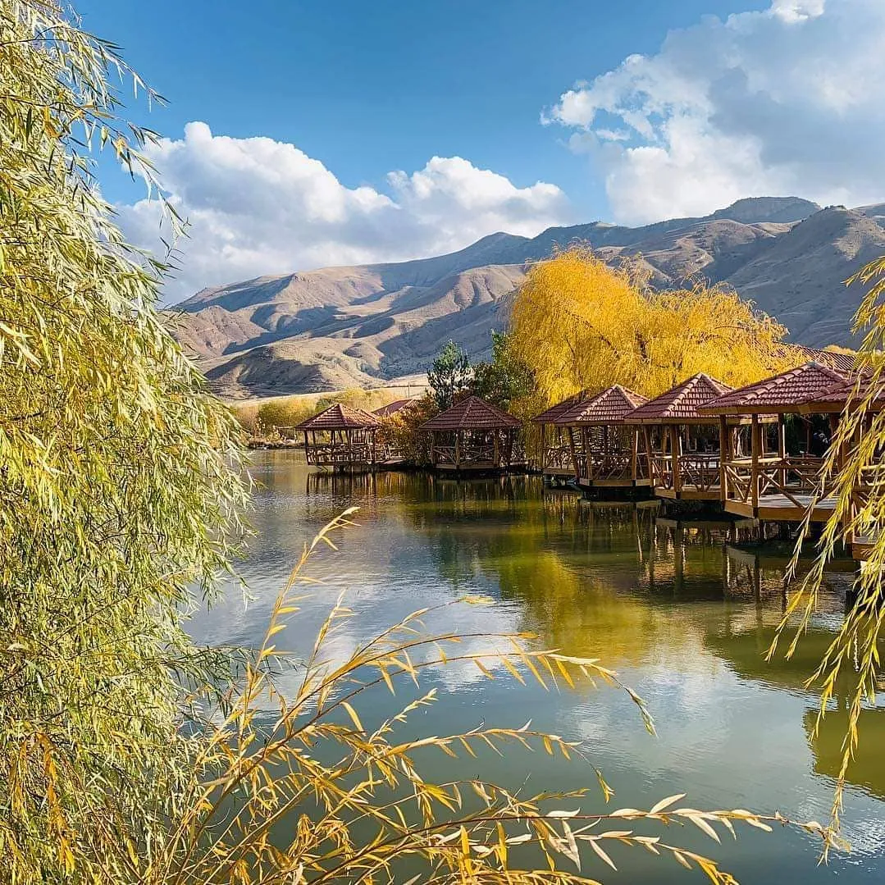
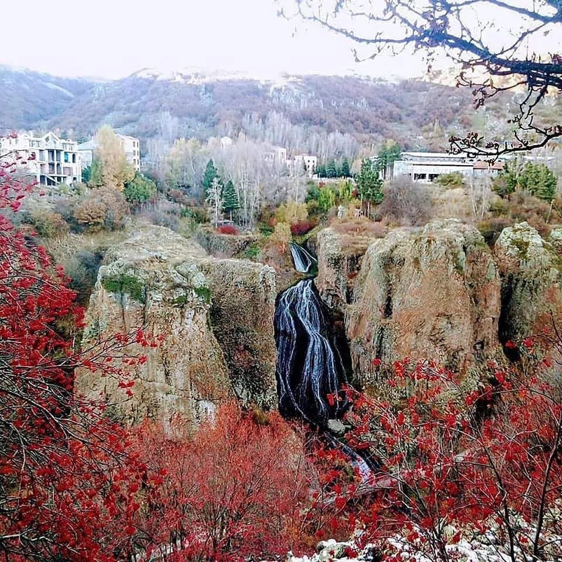
Ջերմաստիճան
- Առավելագույնը հարավում՝ +41 °C
- Բացարձակ նվազագույնը՝ -35 °C
- Միջին ամռանը (հուլիս–օգոստոս)՝ +15 … +26 °C (կախված բարձրությունից)
- Ձմռանը նվազագույն շեմը -4 °C է, իսկ ցուրտ ամիսներին՝ տատանվում է -3 ºC-ից մինչև -8 ºC
- Տարեկան միջին ջերմաստիճանը՝ +12 °C (ցածրադիր) → +0.5 °C (բարձրադիր)
- Հունվար – –3 °C … –8 °C
- Հուլիս – +15 °C … +26 °C
- Բացարձակ առավելագույն՝ +41°C
- Բացարձակ նվազագույն՝ –35 °C
Տեղումներ
Տեղումների տարեկան քանակը.
- Տարեկան միջին՝ 300 – 800 մմ (բարձրությունից կախված)
- Ցածրադիր գոտում ~500 մմ
- Լեռնանտառային գոտիում՝ 600–800 մմ
- Ալպյան գոտում՝ 800–900 մմ
- Ամենախոնավ ամիս – մայիս (հորդ անձրևներ, երբեմն սելավներ)
- Ամենաչոր ամիս – օգոստոս
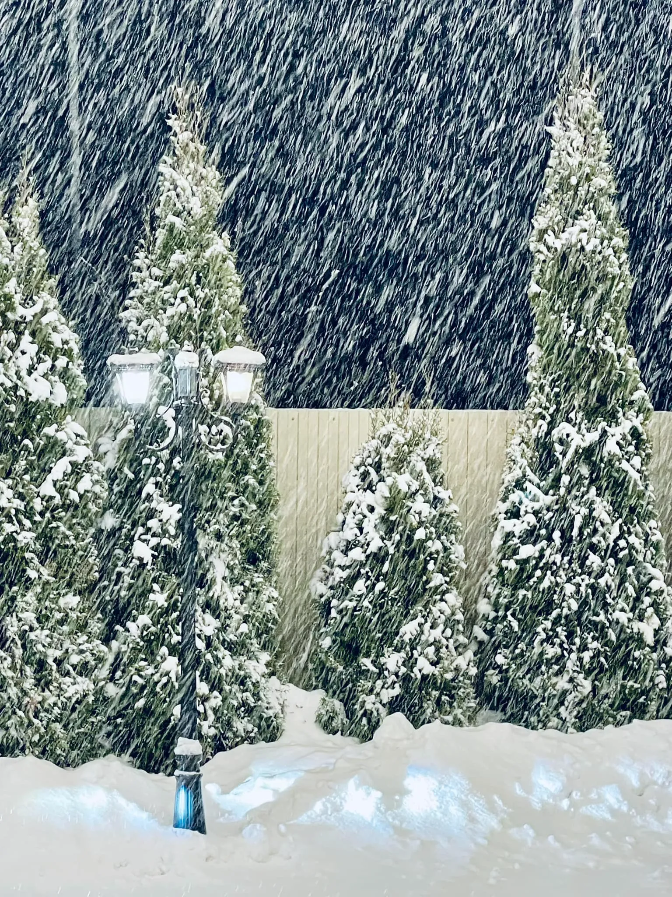
Ձնածածկույթ
- Նախալեռներ՝ 10–76 սմ
- Լեռնային գոտի՝ մինչև 2 մ և ավելի
- Ձյունը պահպանվում է 3–6 ամիս
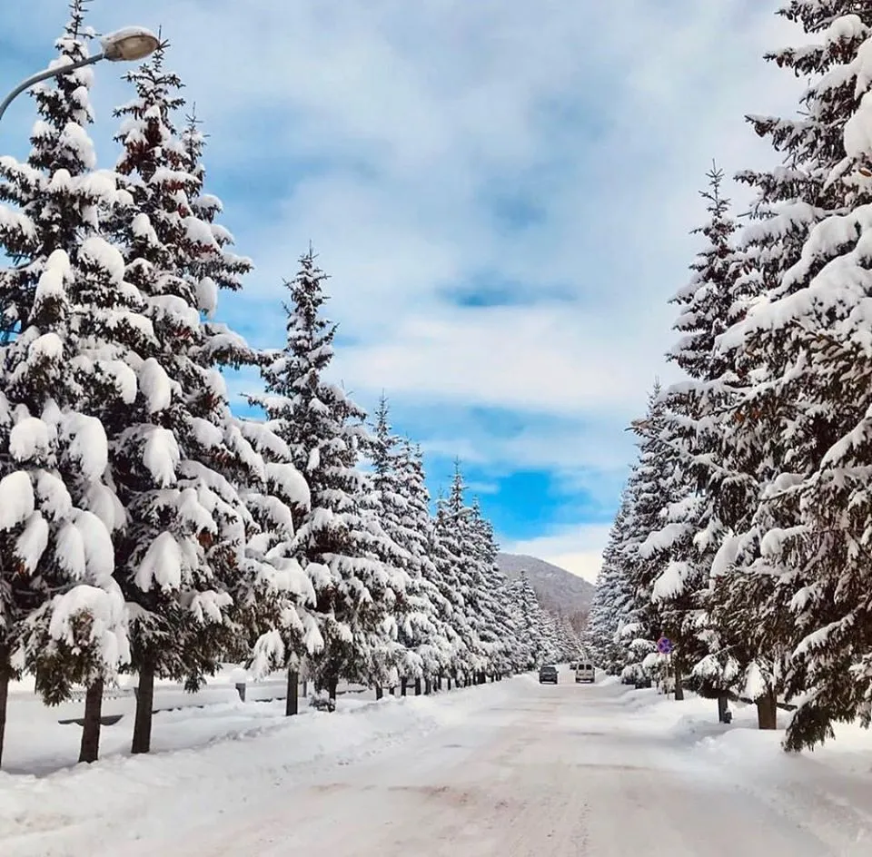
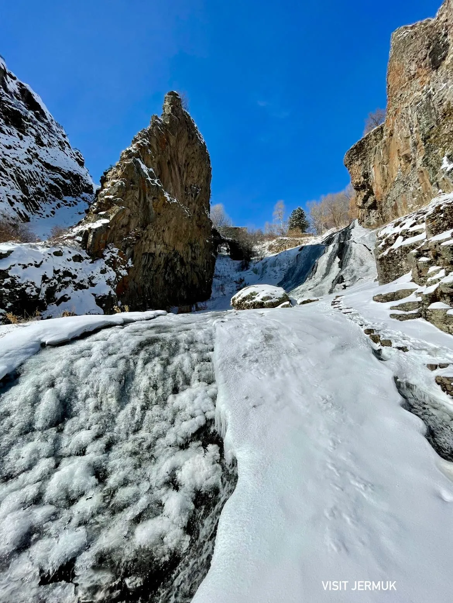
Խոնավություն
Մթնոլորտային խոնավությունը.
- Առավելագույնը հունվարին՝ 67–75%
- Նվազագույն՝ օգոստոսին՝ 39–62%
Քամիներ
- Բնորոշ են լեռնահովտային քամիները (գետերի հովիտներով)
- Միջին արագությունը՝ 1–5 մ/վ
- Առավելագույնը լեռնանցքներում՝ մինչև 35 մ/վ, պոռթկումներով՝ 40 մ/վ
Արևափայլ
Արևափայլքի ժամային տևողության ցուցանիշով Վայոց ձորն առաջատար դիրքերում է Հայաստանի մարզերի ցանկում:
- Տարվա 365 օրերից 30–40 օրն է միայն անարև։
- Արևոտ օրերի թիվը՝ ամենաշատը Հայաստանում:
- Տարեկան արևափայլի տևողությունը՝ 2,300–2,600 ժ
- Մառախուղներ առավել հաճախ – Որոտանի լեռնանցքում (միջինում 830 ժ, երբեմն մինչև 1,600 ժ):
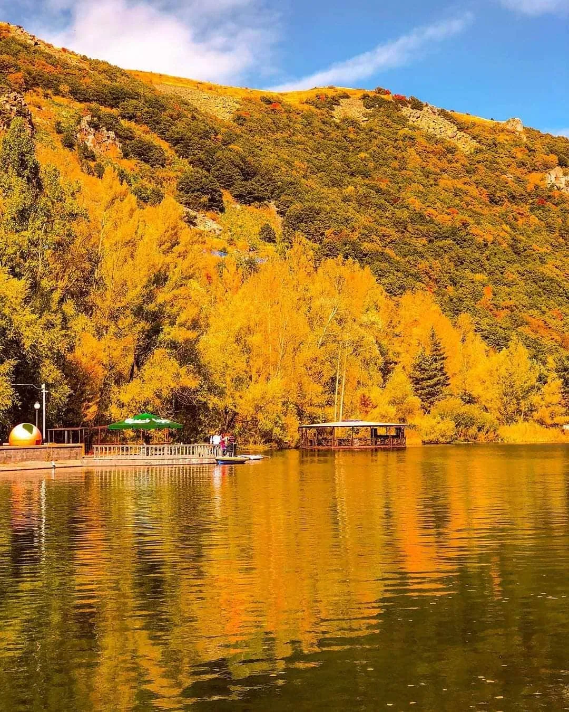